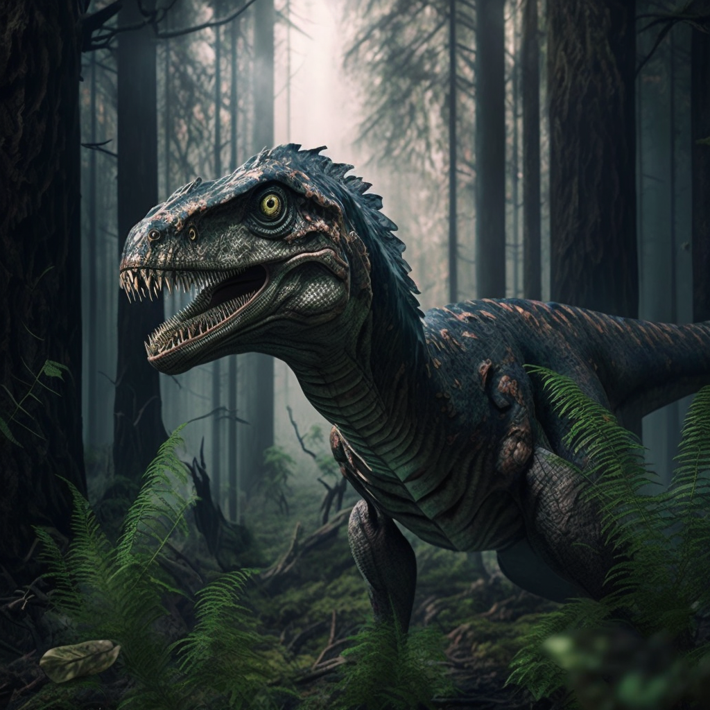

Velociraptor
The Velociraptor, often depicted as a cunning and agile predator, lived during the late Cretaceous period, around 75 to 71 million years ago. The name "Velociraptor" means "swift thief," highlighting its speed and hunting abilities. Unlike its portrayal in popular media, Velociraptor was relatively small, standing about 3 feet tall and measuring about 6 to 7 feet in length.
Velociraptors were likely covered in feathers, similar to modern birds, and had a long, stiffened tail that helped them maintain balance while running. They were highly intelligent for dinosaurs, with a large brain relative to their size, and they likely hunted in packs, making them formidable predators despite their small size.
Here are some key facts about Velociraptor:
- Length: Approximately 6 to 7 feet (1.8 to 2.1 meters)
- Height: About 3 feet (0.9 meters)
- Weight: Up to 33 pounds (15 kilograms)
- Diet: Carnivorous, feeding on small to medium-sized animals
- Location: Fossils found in Mongolia and northern China
Behavior and Habitat
Velociraptors likely lived in arid desert regions, where they used their speed and intelligence to hunt down prey. Their sharp, curved claws were used to grasp and subdue their victims, and they may have used coordinated pack tactics to bring down larger animals.
- Feathered body: Velociraptor is believed to have had feathers, making it more bird-like than the scaly reptiles often depicted in movies.
- Pack hunting: Evidence suggests that Velociraptors may have hunted in groups, using their intelligence and coordination to take down prey.
- Curved claw: Velociraptors had a large, sickle-shaped claw on each foot, which was likely used as a weapon during hunting.
Download a Picture of Velociraptor
Click the button below to download a high-quality image of a Velociraptor.
Download Velociraptor Image{kind=link}